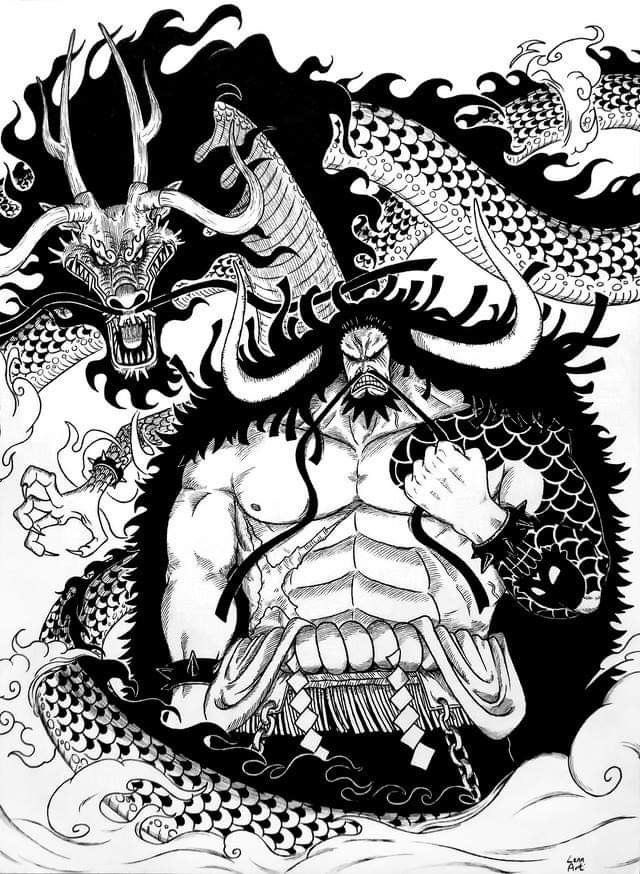
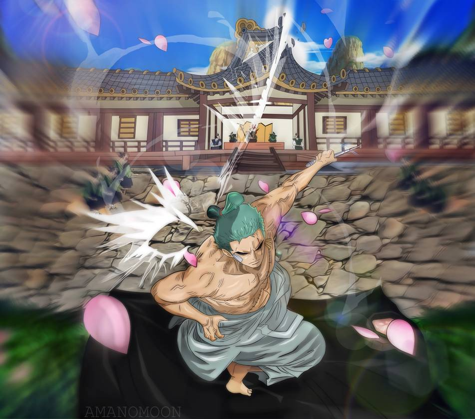

So it's kind of meme on the internet that Kaido is a dragon so yeah he's a dragon
So Yeah luffy the main character is one of my favorite characters , hmm I wonder why

This is Zoro, swordsman who cuts mountains with pocket knives yeah
I used to watch a classic anime like naruto, but them my uncle got me into this series and there went my freetime